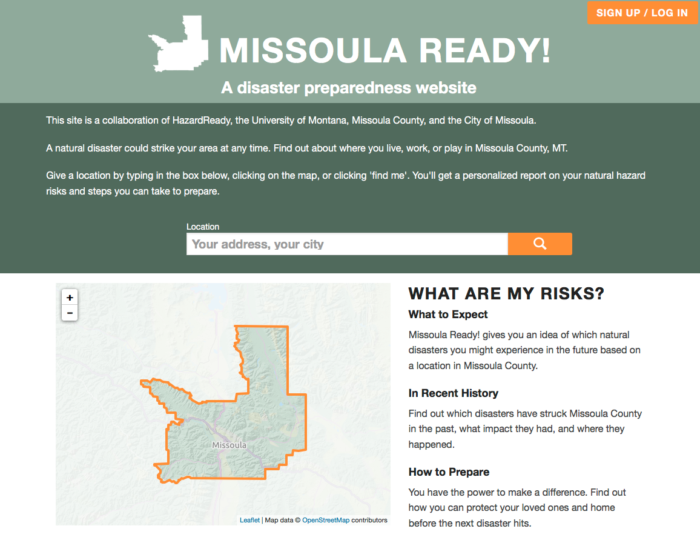
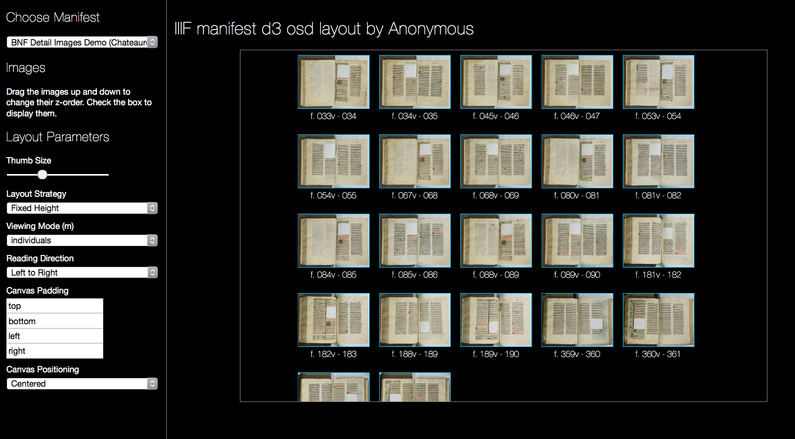

Freelance full-stack software developer by day, violinist by night. Many of my creations, projects, and involvements are listed below, but not all of them.
I work primarily in JavaScript and Python, but I've worked in Ruby, C#, C++ and Java in the past. Take a look at my github profile, or email me here.
-
Hearsay Systems

One of my longest-standing clients is Hearsay Systems, where I primarily work on their websites product. I may have helped to make a website for your financial advisor!
-
VirtuosoViolin.com

Built a website for a professional musician. It's hosted on Squarespace, to make it easy for my client to update her calendar of performances, but uses custom styling and development, so it can be exactly what she wants it to be.
-
Missoula Ready
Adapted someone's hackathon project in order to create Hazard Ready, a site that helps residents of Missoula County assess their risk for natural disasters.
-
iiifManifestLayouts
Used my OpenSeadragon experience to contribute to iiifManifestLayouts, a library being used in Mirador.
-
Curadora

I was part of the team that created the initial version of Curadora, a website that helps people easily find and book lodging for trips to music festivals.
-
Tableau JavaScript API Talk

Getting Started with the JavaScript API was rated among the top ten sessions of the conference, based on attendee feedback. Tableau Customer Conference, 2013
-
Co-author on a paper presented at PNSQC 2010

Using Live Labs Pivot to Make Sense of the Chaos, presented at PNSQC 2010.
-
Chronozoom

I worked with a team of people from Microsoft Live Labs, the University of California at Berkeley, and Microsoft Research in order to create Chronozoom, which is a zooming view of Big History. Chronozoom is an ongoing project; I was involved in the original effort in May of 2010.
-
Master's Thesis

Dendrogram-based Methods for Clustering Refinement, submitted in June of 2005, which includes work from the 2004 paper below, and is dedicated to a very loyal goldfish.
-
Software Testing Research Talk

Software Testing: the BLEEDING EDGE!, presented at Notacon 2005, in Cleveland, OH.
-
Co-author on a paper presented at ISSRE 2004
Tree-Based Methods for Classifying Software Failures, presented at ISSRE 2004.
-
Co-author on a paper presented at ICSE 2003

Automated Support for Classifying Software Failure Reports, presented at ICSE 2003.